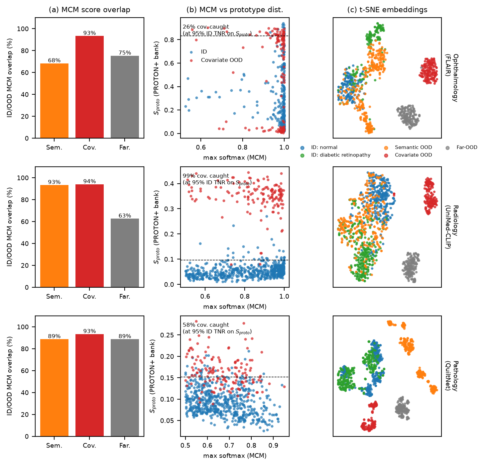
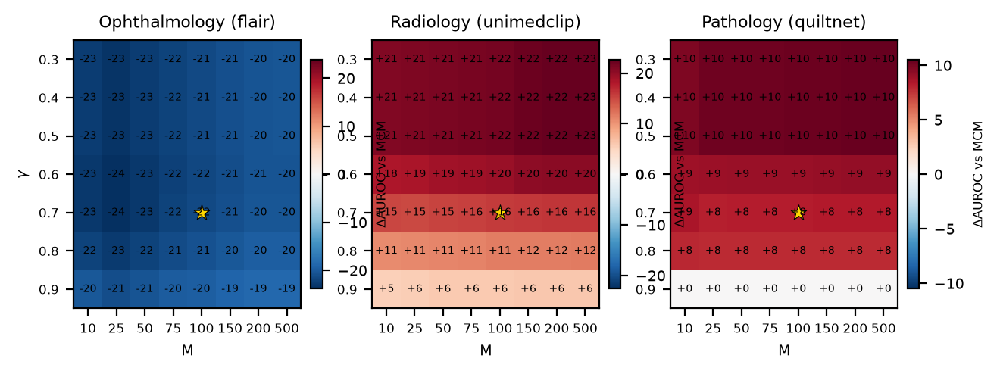
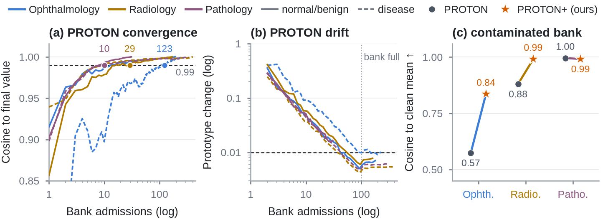

Medical vision-language models classify images from text prompts alone, and their softmax cannot tell that an image comes from a new camera or population. PROTON+ builds class prototypes from the test stream itself, anchors them to the dominant imaging domain, and admits only class-consistent samples, so confidently misclassified shifted inputs no longer corrupt the bank. With PROTON's hyper-parameters unchanged, it improves over MCM on covariate and far shifts across retinal photographs, chest radiographs and histopathology, with no labels and no training.
Method

1Domain-anchored prototypes
A mean-shift step finds the dominant imaging-domain mode of the bank, and each prototype weights its members by proximity to it.
2Consistency admission
A sample joins the bank only if it is confident and within the typical prototype distance of earlier admissions.
3Scale-free fusion
Softmax score and prototype distance are fused as online z-scores, so neither signal dominates by scale.
Results
AUROC (%) per shift type, mean over five random stream orders. Full tables are on the results page.




Try it in your browser. The real FLAIR retina model runs locally; stream images and watch PROTON+ flag what the softmax accepts.
Open demo →Use it on your own data
pip install -e ".[models,data,plots]"
proton make-benchmark --name mydata --vlm flair --id normal=/d/id/normal --id "diabetic retinopathy=/d/id/dr" \
--ood semantic=/d/glaucoma --ood covariate=/d/uwf --ood far=/d/natural --prompt "A fundus photograph of {}"
proton extract --benchmark mydata && proton run --benchmark mydata # every table in outputs/results/mydata/Any open_clip checkpoint works as the VLM; a new model is a four-method subclass of proton.models.base.VLM. PROTON+ is score_stream(..., config=proton_plus_config()); the original PROTON remains the default configuration.
Citation
@inproceedings{das2026proton,
title={PROTON: Prototype-Based Test-Time Online OOD Detection for Medical VLMs},
author={Das, Abhijit and Wasalathilaka, Nichula and Lu, Yifan and Dukre, Adinath and Mahapatra, Dwarikanath and Khan, Shadab and Razzak, Imran},
booktitle={International Conference on Medical Image Computing and Computer-Assisted Intervention},
pages={527--537},
year={2026},
organization={Springer}
}
@misc{das2026protonplus,
title = {PROTON+: Contamination-Robust Prototype Banks for Test-Time Online OOD Detection with Medical VLMs},
author = {Das, Abhijit and Wasalathilaka, Nichula and Lu, Yifan and Dukre, Adinath and Mahapatra, Dwarikanath and Khan, Shadab and Razzak, Imran},
year = {2026},
note = {Preprint, https://github.com/aj-das-research/PROTON}
}